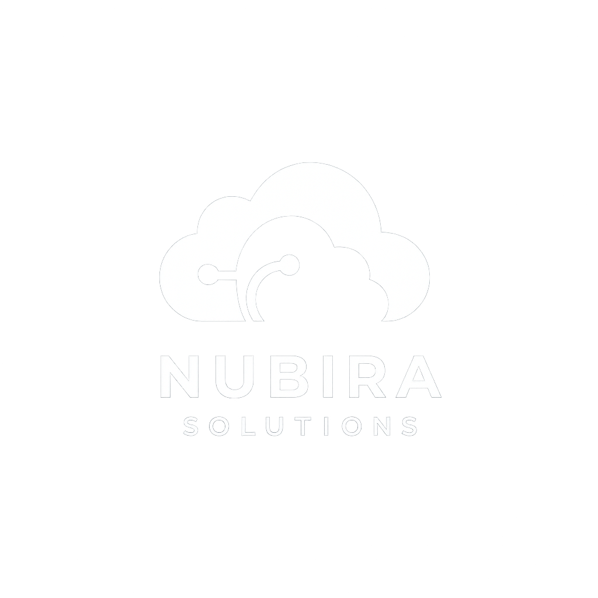

Nubira Solutions

¿Servidores costosos y mantenimiento sin fin? La nube te libera. Paga solo por lo que usas y enfoca tu capital donde realmente importa: ¡el crecimiento de tu negocio!
Ahorro, Eficiencia, Pago por uso, Inversión inteligente.
¿Picos de demanda inesperados? No hay problema. Escala tus recursos al instante y mantén la agilidad de tu negocio en cualquier situación. ¡Tu infraestructura evoluciona contigo!
Escalabilidad, Flexibilidad, Agilidad, Crecimiento rápido.
Protege lo más valioso de tu empresa con la infraestructura segura y redundante de la nube. ¡Tus datos estarán a salvo de cualquier amenaza, garantizando la continuidad de tu negocio!
Seguridad, Protección de datos, Resiliencia, Recuperación, Confianza.
Impulsa la productividad de tus equipos permitiéndoles trabajar juntos en tiempo real, sin importar su ubicación. ¡La nube conecta a tu empresa y facilita la colaboración global!
Acceso remoto, Colaboración, Productividad, Conectividad, Movilidad.
Reducimos tu factura de AWS identificando recursos infrautilizados y optimizando la arquitectura.
Desde: 990 €
Solicitar AuditoríaDiseñamos arquitecturas resilientes que se adaptan a tu crecimiento sin interrupciones.
Desde: 2.500 €
Hablar con un ExpertoAutomatizamos la creación y gestión de tu infraestructura con Terraform y CloudFormation.
Presupuesto a medida
Planificar mi MigraciónMi trayectoria profesional ha sido tan diversa como enriquecedora. Empecé en el exigente sector bancario, donde la fiabilidad y la seguridad lo eran todo. Allí aprendí a trabajar con infraestructuras críticas, donde cada detalle contaba.
Más tarde, pasé al sector turístico, un entorno cambiante donde la escalabilidad era clave. Fue allí donde descubrí el verdadero poder de la tecnología cloud para adaptarse a picos de demanda y necesidades variables. Esta experiencia me dio una nueva visión sobre cómo la nube puede ser un aliado estratégico para los negocios.
Pero fue en el mundo de las startups donde realmente conecté con mi propósito. Vi de primera mano los desafíos que enfrentan: presupuestos ajustados, necesidad de escalar rápidamente y mucha presión por construir una base tecnológica sólida desde el principio. Decidí entonces poner toda mi experiencia al servicio de estas empresas.
Así nació Nubira Solutions, porque creo firmemente que la nube —bien gestionada— no es un gasto, sino una palanca de crecimiento. Hoy ayudo a startups y scale-ups a aprovechar todo el potencial de AWS de forma eficiente, escalable y sin sustos en la factura.


.png)
.png)